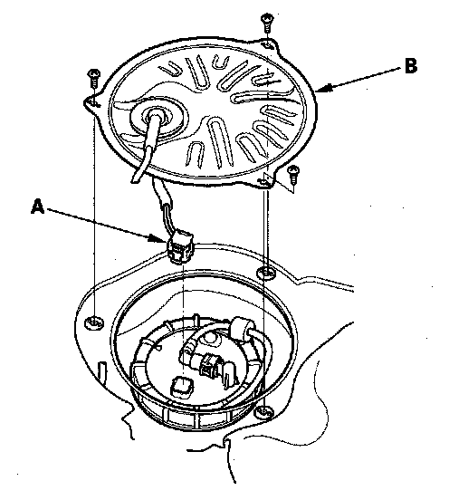

Fuel Tank Unit Removal/Installation
Fuel Tank Unit Removal/InstallationSpecial Tools Required
Fuel sender wrench 07AAA-S0XA100
Removal
1. Relieve the fuel pressure.
2. Remove the fuel fill cap.
3. Remove the second row seat.
4. Remove the access panel (A) from the floor.
5. Disconnect the fuel tank unit 4P connector (B).
6. Disconnect the quick-connect fittings (C) from the fuel tank unit.
7. Using the fuel sender wrench, loosen the locknut (A).
8. Remove the locknut (A), locknut plate (B), and fuel tank unit (C).
Installation
1. Install a new base gasket (A) and locknut plate (B) on the fuel tank (C).
2. Insert the fuel tank unit (D) into the fuel tank. Be careful not to bend the fuel gauge sending unit.
3. Align the marks (E) on the tank and the fuel tank unit, then tighten a new locknut (F) by hand.
NOTE:
- After tightening, make sure the marks are aligned. Check the circumference of the base gasket visually or by hand and be sure that it is not pinched.
- Do not coat the base gasket with the engine oil.
- After installation, check the base gasket visually or by hand to be sure it is not pinched.
4. Using the fuel sender wrench, tighten the fuel tank unit locknut (A).

5. Connect the fuel tank unit 4P connector (A).
6. Install the access panel (B) to the floor.
7. Install the second row seat.